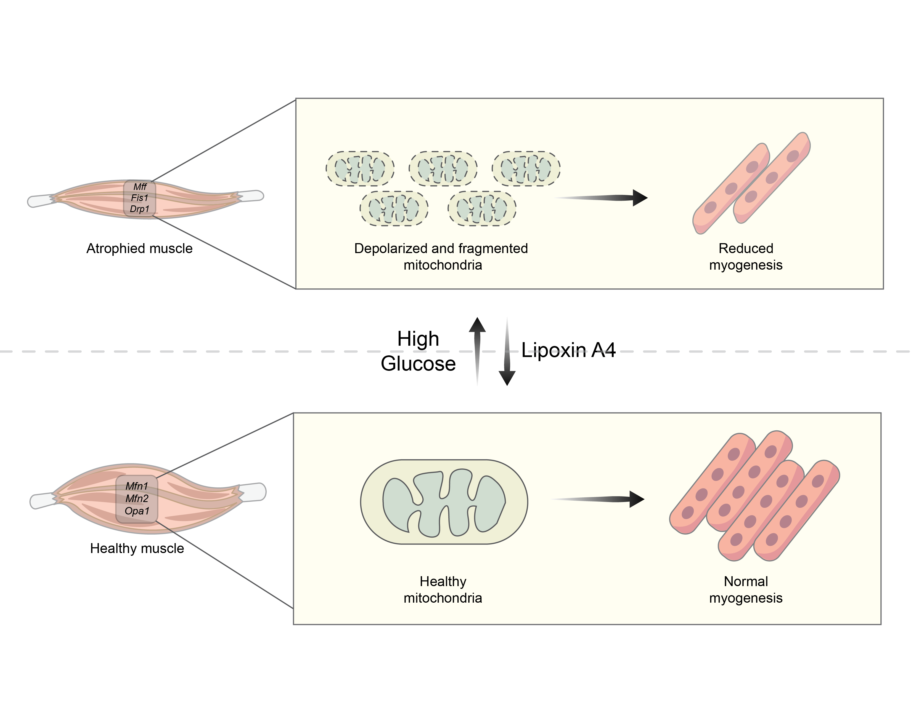
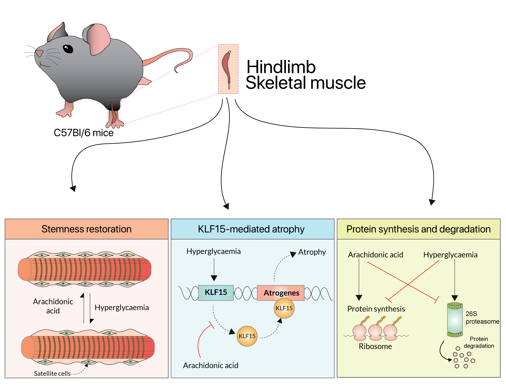
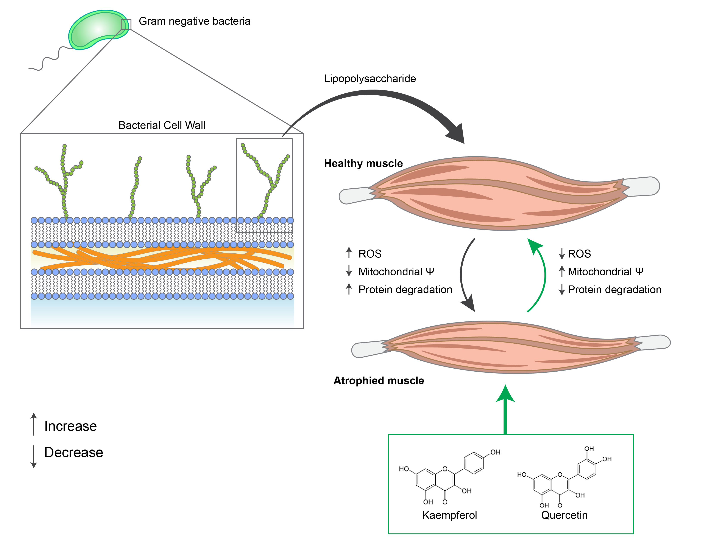

Lipoxin A4 activates Nrf2 expression and mitigates hyperglycaemia-induced impairment of myogenesis and rescues damage to mitochondria
Lipoxin A4 restores myogenesis under hyperglycaemic stress by activating Nrf2 signaling. It reduces oxidative stress and preserves mitochondrial integrity.
Journal of Physiology and Biochemistry
Read more
Arachidonic Acid Protects Skeletal Muscle Against Hyperglycaemia-Induced Muscle Atrophy by Modulating Myogenesis and Regulating KLF15 Expression in C57Bl/6 Mice
Arachidonic acid protects against diabetes-induced muscle atrophy in mice. It restores myogenesis and suppresses KLF15-mediated catabolic pathways.
The FASEB Journal
Read more
Mitigation of chronic glucotoxicity-mediated skeletal muscle atrophy by arachidonic acid
Arachidonic acid reverses glucotoxicity-induced muscle damage in vitro. It reduces inflammation and restores protein synthesis in muscle cells.
Life Sciences
Read more
Quercetin and Kaempferol Mitigate Endotoxin-Induced Skeletal Muscle Wasting by Inhibiting KLF15 Expression and Restoring the Antioxidant System
Quercetin and kaempferol reduce endotoxin-induced muscle wasting. They suppress inflammation, oxidative stress, and restore mitochondrial function.
The FASEB journal
Read more
The elusive role of myostatin signaling for muscle regeneration and maintenance of muscle and bone homeostasis
This review highlights the role of myostatin in muscle regeneration and disease. It discusses therapeutic targeting for muscle-wasting conditions.
Osteoporosis and Sarcopenia
Read more
Unlocking the Potential of Obestatin: A Novel Peptide Intervention for Skeletal Muscle Regeneration and Prevention of Atrophy
Obestatin promotes myogenesis and prevents muscle atrophy via GPR39 signaling. It modulates autophagy and enhances muscle regeneration pathways.
Molecular Biotechnology
Read more